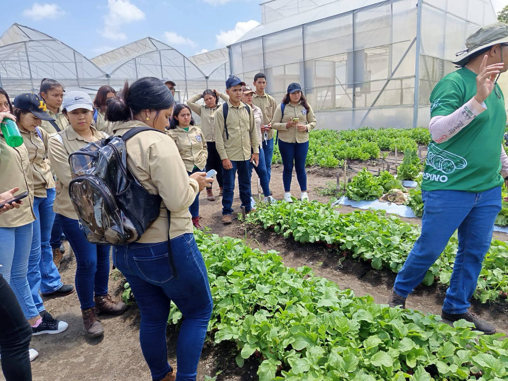
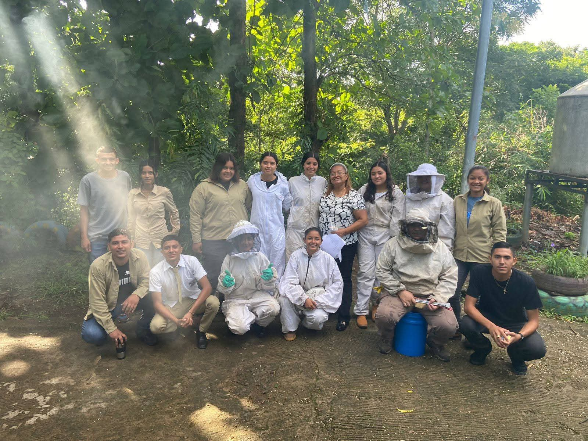
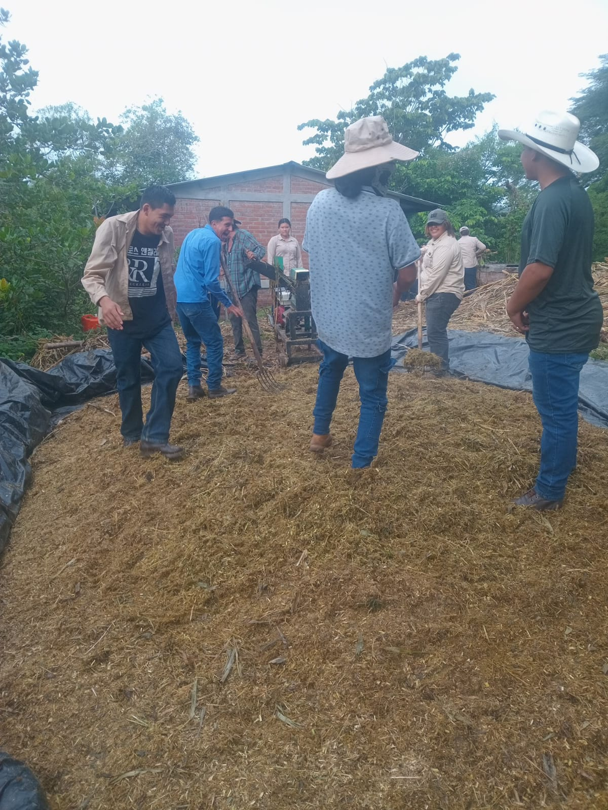
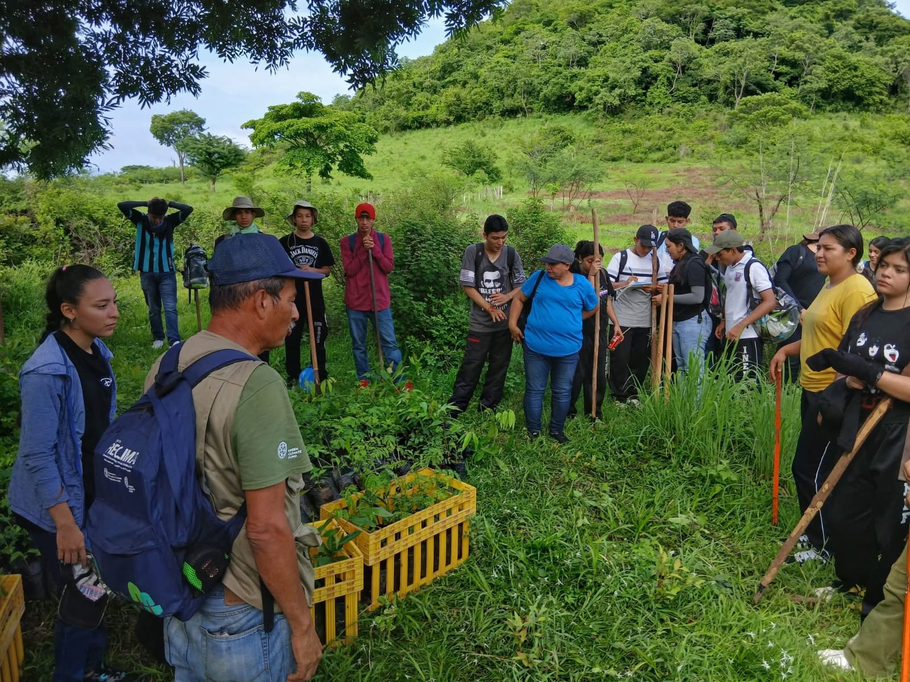

¿En qué consiste la especialidad?
Aprende técnicas agrícolas sostenibles, manejo de cultivos en invernaderos, procesamiento de alimentos y producción pecuaria con recursos de primera mano en el instituto.



